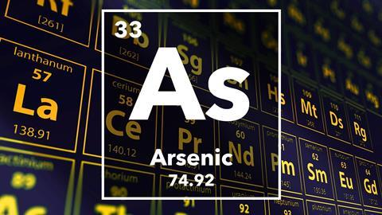
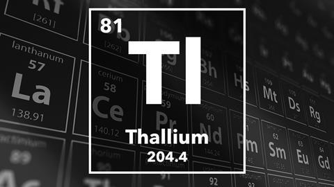
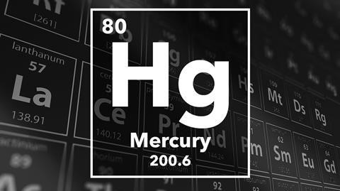

The three poisonous elements researched showed several similarities, but also many differences.
All three are heavy elements which as a whole, are considered to be the most unstable elements because their nuclei are larger. All three react with halogens, oxygen and water, although Mercury only does so at high temperatures. The two lighter elements, arsenic and thallium are able to infiltrate the body by mimicking the behaviour of ions used in life processes. In the case of arsenic, the arsenate ion is the analog to phosphate, a ion necessary for the production of ATPs and NADH in glycolysis. When arsenates enter the human body, like other sugars which can enter a cell’s glycolysis process at any step, they are capable of replacing the phosphate used to create 1,3-Bisphosphoglyceric acid. Instead, 1-Arseno-3-phosphoglycerate, a very unstable molecule which hydrolyzes quickly to form 3-phosphoglycerate is formed. As a result, no energy is released, disrupting glycolysis.
Thallium can work its way into the nervous system via its 1+ ion, which mimicks the behavior of Na+ and K+ ions which are pumped in and out of neurons when nerve impulses are being sent. This affects the nerve signals being transmitted.
Mercury and thallium, the two metals, bond to already existing molecules to disrupt their ability to perform their functions. Thallium bonds with sulfhydryl groups in hair keratin, which prevents them from continuing hair production, and the Hg2+ ion bonds with enzymes, preventing them from producing antioxidants and therefore, causing free radical levels to skyrocket.
Mercury is the only element of the three which is classified as a neurotoxin. Both mercury and thallium target the major organs, while both arsenic and thallium target cellular processes. However, all three have proven antidotes, which bind with the elements so that they may be flushed out of the body via excrement. Prussian Blue exchanges its potassium ion for a thallium ion, rendering it insoluble so that it may leave the body. Dimercaptosuccinic acid bonds with arsenic and mercury ions so that they can leave through urine as well.
|  |  |  |